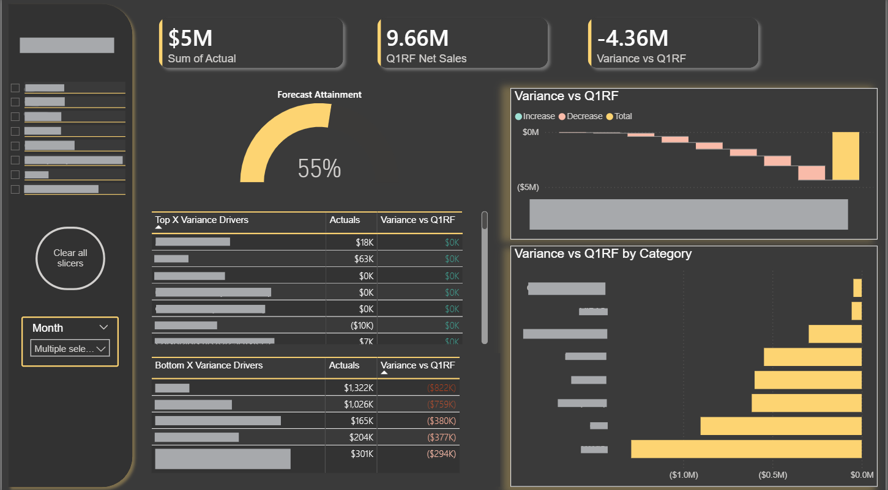
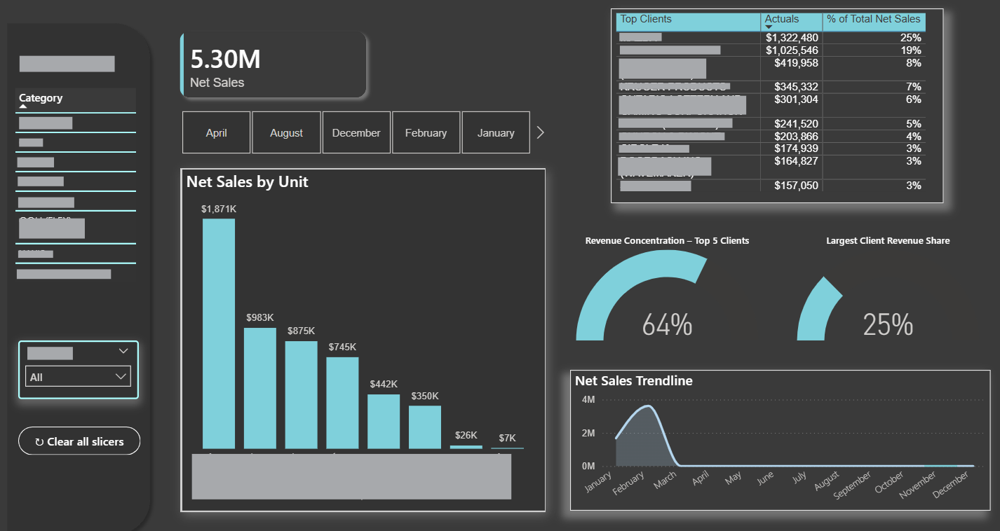
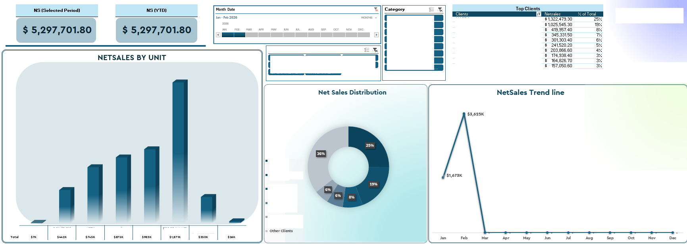
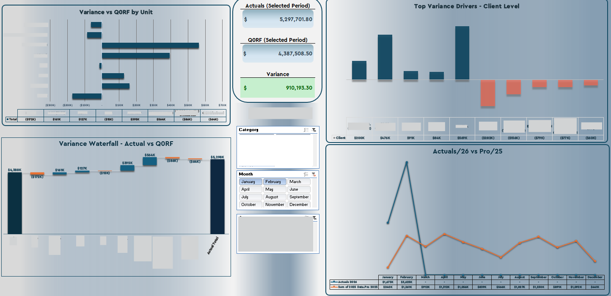
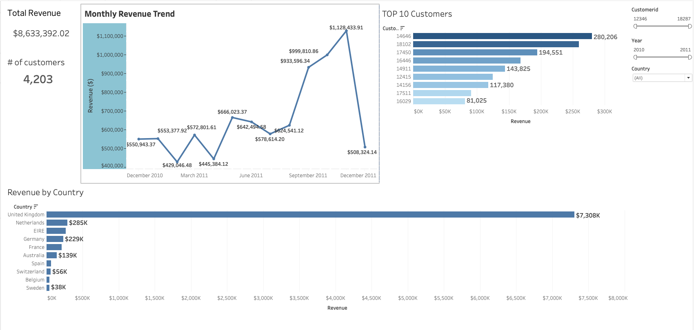

FP&A Manager and business intelligence professional with a strong focus on turning complex data into clear, actionable insights. Specialized in building automated reporting systems, interactive dashboards, and end-to-end financial models that drive faster, smarter decisions at the executive level. Proficient in Power BI, Power Query, Tableau, SQL, Excel VBA, and AI-assisted analytics — with a track record of automating month-end close processes, designing KPI frameworks, and presenting insights to CFOs, VPs of Finance, and investment stakeholders across multi-entity organizations.
A selection of business intelligence dashboards built in Power BI and Tableau. Client and company identifiers have been anonymized.

Tracks forecast attainment against quarterly rolling forecasts with waterfall variance breakdowns by business unit and category. Enables leadership to instantly identify top and bottom variance drivers at the client level, supporting real-time reforecast decisions.

Executive-level revenue dashboard providing a full view of net sales performance across business units, client concentration risk, and seasonal trendlines. Designed for CFO and VP-level reporting with interactive category and month filters.

Multi-visual dashboard combining unit-level bar charts, revenue distribution donut charts, and a full-year net sales trendline. Built with dynamic date slicers and category filters to support both selected-period and YTD analysis simultaneously.

Comprehensive variance analysis dashboard comparing actuals against the prior quarterly rolling forecast. Features a variance waterfall chart for cumulative build-up analysis and a client-level bar chart identifying the top variance drivers across the portfolio.

Built in Tableau using SQL-imported data, this dashboard provides a visual breakdown of sales performance and key business metrics. Demonstrates end-to-end data pipeline capability — from SQL extraction and transformation through to interactive Tableau visualization.